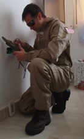
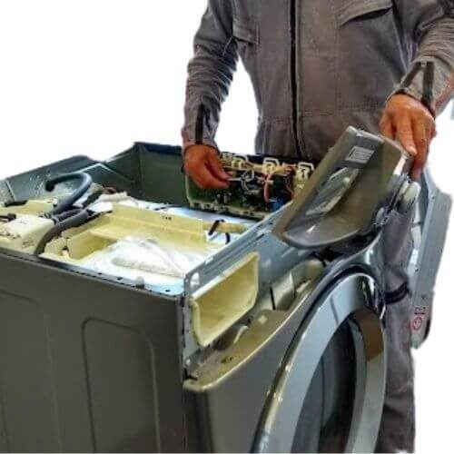
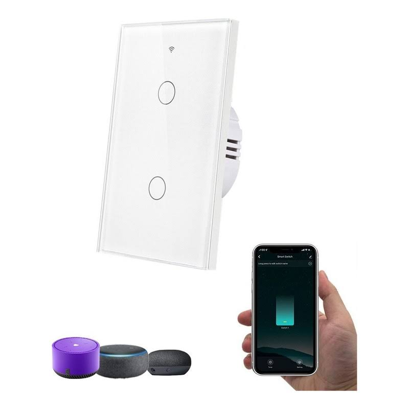
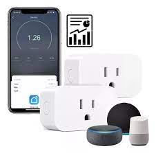
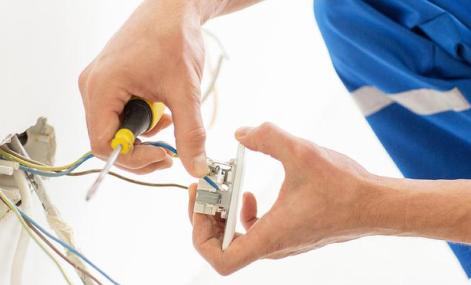

whatsapp 316 152 8810
whatsapp 316 152 8810 fred-san@outlook.com
fred-san@outlook.com www.facebook.com/Electryrios
www.facebook.com/Electryrios www.instagram.com/electryrios Bucaramanga-giron-floridablanca-piedecuesta
www.instagram.com/electryrios Bucaramanga-giron-floridablanca-piedecuesta
whatsapp 316 152 8810fred-san@outlook.comwww.facebook.com/Electryrioswww.instagram.com/electryriosEl mantenimiento eléctrico es el proceso de garantizar que los equipos eléctricos se mantengan en buen estado de funcionamiento. Incluye la inspección, la comprobación y la reparación de los equipos eléctricos, según sea necesario, para evitar problemas que puedan provocar una pérdida de energía o un incendio eléctrico.
El mantenimiento eléctrico es importante tanto para las empresas como para los propietarios de viviendas, ya que ayuda a garantizar la seguridad de los empleados y los residentes y evita costosas reparaciones o sustituciones de equipos.
El mantenimiento de los equipos eléctricos suele estar a cargo de electricistas y personal de mantenimiento con conocimientos en el proceso de mantenimiento. También suelen seguir o utilizar un lista de comprobación del mantenimiento eléctrico. Para garantizar un entorno de trabajo seguro durante el mantenimiento, la aplicación de normas de seguridad eléctrica deben ser seguidas siempre por el personal en su área de trabajo.

En Electryrios nos encargamos del mantenimiento y reparación de tu lavadora, sabemos lo importante que es cuidar un equipo que es de gran ayuda en tu hogar y mantener en buen funcionamiento esa inversión de tu hogar.

La tecnología ha venido incrementando con el ahorro energético, con la llegada de la inteligencia artificial y tomas inteligentes mantenernos actualizados en el hogar como en la comodidad de nuestro día a día. Instalación, reparación y mantenimiento al circuito eléctrico en tu hogar, tomacorrientes, caja de distribución, interruptores, puntos de instalación nuevos de luz, cambio de breaker entre otros….



Hay varias razones para obtener ayuda profesional para las reparaciones eléctricas. Los problemas típicos incluyen: